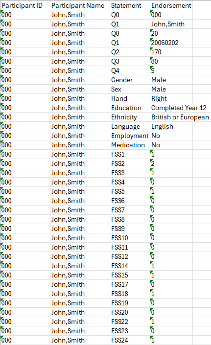

STEPS#
The below steps walk through ow to clean the questionnaire data. Although these steps are specific questionnaire they can be modified along with the script to work for different questionanires.
Here is the script used to clean these quesitonnaires: Download R Script
Step 1: Setting up R studio#
**Install both R and R studio, ensuring R is installed first. Open both R and R studio.

Once R is open, the packages required must be installed. This only needs to be done once at the start.
# STEP 1: Load required packages
# ------------------------------------------------------------------------------
# These packages help us read/write Excel files and work with data
# If you don't have these installed, run these commands first:
# install.packages("readxl")
# install.packages("writexl")
# install.packages("jsonlite")
# install.packages("tidyr")
# install.packages("dplyr")
Once installed you need to load the packages into your library:
library(readxl) # For reading Excel files
library(writexl) # For writing Excel files
library(jsonlite) # For parsing JSON data from Pavlovia
library(tidyr) # For formatting data
library(dplyr)
Step 2: Setting up File Paths#
In R, define the specific input files will be stored, and where the output data will be saved. It is important to change this to match your file names exactly.
# IMPORTANT: Change these paths to match where YOUR files are located!
# The folder containing your Pavlovia CSV files
input_folder <- "/Users/reiadin/Participants"
# The specific CSV file you want to process
# You can change this to process different files
input_file <- "neuropaths-questionnaires_PARTICIPANT_SESSION_2025-04-14_23h21.32.650.csv"
# Where you want to save the output files
output_folder <- "/Users/reiadin/Participants_Final"
In this step, only the input_folder and output_folder need to be changed only at the start. The input_file will change with each particpant’s data, and needs to be updated each time the code is run.
NOTE: R only recognises forward slashes. If you are copying the file pathway from your laptop it will automatically input backslashes. If you find the script won’t run ensure you have changed these to forward slashes.
Step 3: Loading the CSV files#
Next step is to load the CSV file, by reading the participant data into R

Step 4: extracting participant information#
To extract participant information, the participant details, which is Participant ID and Name, have to be stored in JSON format
# The participant ID and name are in row 5 (trial_index = 0)
# They're stored in a JSON format in the "responses" column
# Find the row that contains participant info (trial_type = "survey-text")
participant_row <- data[data$trial_type == "survey-text", ]
# Extract the JSON string from the responses column
participant_json <- participant_row$responses[1]
# Parse the JSON to get the actual values
# This converts the JSON text into a list we can work with
participant_info <- fromJSON(participant_json)
# Pull out the specific values we need
participant_id <- participant_info$Q0 # Participant ID
participant_name <- participant_info$Q1 # Participant name
cat("Processing participant:", participant_name, "with ID:", participant_id, "\n")
# Print to check (optional)
print(paste("Processing data for:", participant_name))
print(paste("Participant ID:", participant_id))
Step 5: Extracting CNBT responses#
To extract CNBT responses, fill in these rows to convert the JSON responses.
# The actual question responses are in row 6 and down (trial_type = "survey-likert" and "survey-text" and "survey-select")
# Include all trial_types that may contain questions
cnbt_rows <- data[data$trial_type %in% c("survey-likert", "survey-text", "survey-select"), ]
# Check if we found any rows
if(nrow(cnbt_rows) == 0){
stop("No survey-likert responses found in the CSV!")
}
# Parse each row's JSON response into a data.frame
cnbt_list <- lapply(seq_len(nrow(cnbt_rows)), function(i) {
row_json <- cnbt_rows$responses[i]
if (!is.na(row_json) && row_json != "") {
df <- as.data.frame(fromJSON(row_json), stringsAsFactors = FALSE)
df$orig_order <- i # <-- add orig_order here, inside each df
return(df)
} else {
return(NULL)
}
})
#Remove Nulls
cnbt_list <- Filter(Negate(is.null), cnbt_list)
# Check that we have data
if(length(cnbt_list) == 0){
stop("Parsed CNBT list is empty. Check JSON format.")
}
#Normalize columns: find all unique columns across responses
all_cols<- unique(unlist(lapply(cnbt_list,names)))
#add missing columns with NA to each data,frame and reorder columns consistently
cnbt_list <- lapply(cnbt_list, function(df){
missing <- setdiff(all_cols, names(df))
if(length(missing)>0) df[missing]<- NA
df[all_cols]
})
#stack vertically
cnbt_responses <- do.call(rbind, cnbt_list)
#add participant info columns ONCE here (wide format)
cnbt_responses$participant_id <- participant_id
cnbt_responses$participant_name <- participant_name
# Print to check (optional)
print("CNBT responses:")
print(cnbt_responses)
Step 6: Cpnvert the data to Long Format#
The data is currently in wide format, with all questions in one row. It needs to be converted to long format, with one question per row as below:
# Select all columns that are survey questions (exclude participant info)
question_cols <- setdiff(names(cnbt_responses), c("participant_id","participant_name", "orig_order"))
#Convert all question columns to characters(stops pivot error)
cnbt_responses[question_cols] <- lapply(cnbt_responses[question_cols], as.character)
# Add a helper column to preserve original CSV row order
cnbt_rows$orig_order <- seq_len(nrow(cnbt_rows))
# reshape from wide to long
output_data<- cnbt_responses%>%
pivot_longer(
cols=all_of(question_cols),
names_to="Statement ID",
values_to="Endorsement",
) %>%
filter(!is.na(Endorsement) & Endorsement != "") %>% # Remove empty responses
rename(
`Participant ID` = participant_id,
`Participant Name` = participant_name
) %>%
arrange(orig_order)
# Drop helper column
output_data$orig_order <- NULL
# Reset row numbers so they go 1, 2, 3, etc.
rownames(output_data) <- NULL
cat("Preview of long-format data:\n")
print(head(output_data, 10))
Step 7: Saving the Excel file#
The clean data needs to be exported to an excel file
# Create filename: ParticipantID_questionnaire.xlsx (e.g., "222_questionnaire.xlsx")
output_filename <- paste0(participant_id, "_", questionnaire, ".xlsx")
output_path <- file.path(output_folder, output_filename)
# Write the data to an Excel file
write_xlsx(output_data, output_path)
# Print success message
cat("SUCCESS! File saved to:", output_path, "\n")
The entire process will be repeated for each participant’s CSV file, wiht input_file being updated each time. The output will result in an excel file, as seen below:
